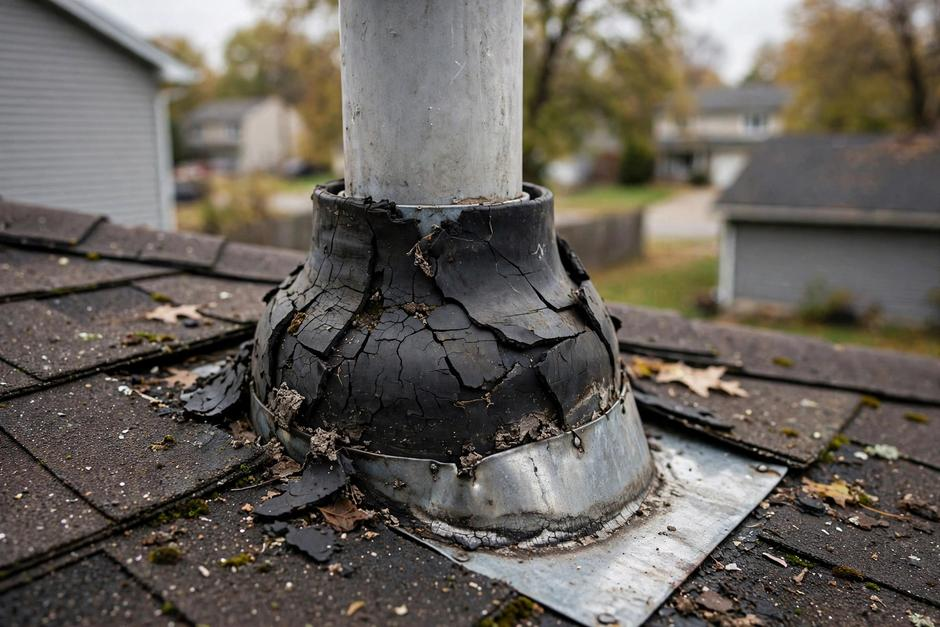
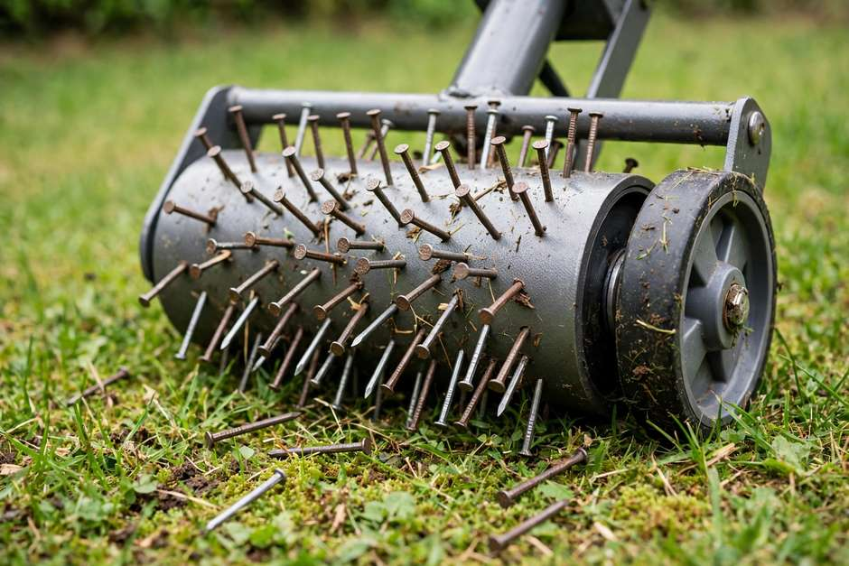
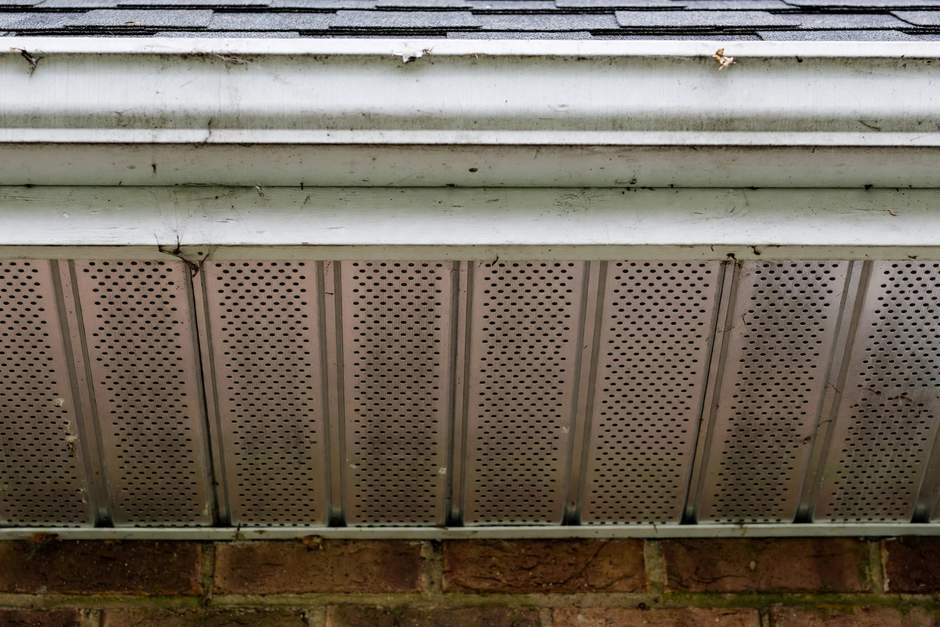
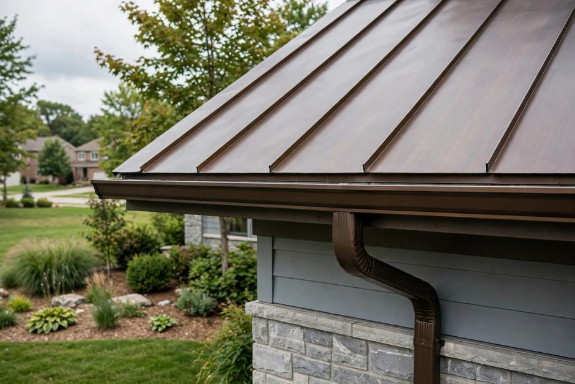

Granule loss and bruised shingles after hail
Granules protect the shingle from sun; bruising weakens the mat. Both shorten service without an immediate leak. An inspection records the extent before scope is chosen.
Storm damage roof repair in Des Plaines, IL covers hail and wind damage on one page, because most storms bring both. Hail bruises shingles and strips granules; wind lifts tabs and tears ridge caps. This page explains how each shows, how to document it, and how repair decisions follow. Call (224) 802-4866 during office hours after a storm.
Tell us what is happening with your roof. Office hours: Mon–Tue 7:30 AM–7:00 PM, Wed–Fri 7:30 AM–7:30 PM, Sat 8:30 AM–5:00 PM, Sun closed.
Call (224) 802-4866 → Phone is the only contact channel.
Hail damage and wind damage are different failures. Hail strikes bruise the shingle mat and knock granules loose, which shortens the covering's service even when no leak appears at once — leaks from hail often show months later. Wind damage lifts tabs, creases shingles at the seal line, and tears ridge caps, leaving courses open to the next rain. Both are assessed slope by slope, since one side of a roof can be damaged while another is untouched.
Illinois hail exposure is described by two different measures that should not be blended: the Insurance Information Institute, using Storm Prediction Center data, placed Illinois 9th by major-hail-event count, with 167 events in 2025, while State Farm placed Illinois 3rd by hail claims in 2025. Event counts and claim counts measure different things. The National Weather Service treats hail of 1 inch or larger as a severe-thunderstorm threshold. Across the NWS Chicago forecast area — 23 counties, not Des Plaines alone — the severe-weather season runs April through September, peaking in June and July. Mid-century stock around Cumberland and downtown Des Plaines meets these storms with older coverings and varied flashing details. After a storm, a roof inspection documents the slopes, and emergency roof repair covers temporary protection where a breach is open.
Hail and wind are covered together here, as they arrive together. Documentation comes before scope: what is photographed and written down shapes every later decision, including any conversation with your insurer. Nothing on this page promises an insurance outcome.
Hail bruises the shingle mat beneath the surface and strips protective granules. Bruising may be felt as a soft spot before it is seen, and granule loss shows in gutters and at downspout outlets. Not every hail event damages every roof — size, wind, roof age, and covering type all matter, and an inspection looks rather than assumes.
Wind lifts tabs, breaks sealant bonds, creases shingles, and tears ridge caps. Creased shingles may lie flat again after the storm while remaining broken at the seal. Wind is the most common severe-weather type across the NWS Chicago forecast area, and damage is often worst on the windward slopes.
Photograph damage from the ground where it is safe, note the date and time of the storm, and keep granule evidence in gutters in place until the roof has been looked at. Dated photos, a written account of what you observed, and the roofer's written findings are the record an insurer reads.
In general terms: you document the damage, you contact your insurer and file the claim, and the roofer provides written findings and an estimate you can share. The contractor's role is the estimate and documentation; filing the claim and decisions about coverage stay with you and your insurer. More on the insurance claim help page. No outcome is promised here.
Class 4 impact-resistant shingles are a product category rated for impact resistance. Whether they suit your roof, and whether your insurer offers any consideration for them, are questions for your insurer — check with your insurer before assuming any discount or benefit. No Des Plaines mandate for impact-resistant shingles was found.
A post-storm inspection covers slopes, flashing, valleys, ridge, gutters, and penetrations, with photos and written findings. It is the step that turns a worried look from the ground into a scoped repair or replacement conversation — see roof inspection.
After a storm, stay off the roof and clear of downed lines and hanging debris. A wet roof is a fall risk, and storm damage is assessed from the ground first. Note the date and time of the storm while it is fresh.
Dated photos from the ground, notes on where water shows inside, and granules collected at downspouts all form part of the record. Do not clear evidence away before the roof has been documented.
Each slope, the flashing, valleys, ridge, and gutters are looked at and photographed. Hail bruising, granule loss, lifted tabs, and torn caps are recorded slope by slope, since damage is rarely even.
Where damage is limited, roof repair is scoped. Where it is widespread, roof replacement is discussed. The scope follows the documented findings, not the storm's reputation.
Written findings and an estimate are provided for you to share with your insurer, since you file the claim. Keep copies of everything: photos, notes, findings, and correspondence.
Storm work starts with looking and recording. The equipment below supports assessment, temporary protection, and repair.
Dated photos of slopes, flashing, and gutters, taken before any repair, form the record. Photos from the ground come first; roof-level photos follow only when access is safe.
Heavy-duty tarps cover breached sections as a temporary measure only. Tarping is not a permanent fix, and it is not a substitute for repair.
Lifts damaged shingles and flashing for inspection and repair without tearing sound covering nearby.
Re-secures loosened courses and sets nails for replacement shingles and flashing.
Keeps ladders off gutters and provides protection on steep slopes. Storm-wet roofs are treated with particular care.
Clears nails and debris from the lawn and driveway after repair work.
Granules in the gutters, soft bruised spots on shingles, no water inside. The roof looks almost normal from the ground.
Ask for an inspection that checks for bruising and granule loss slope by slope. Hail damage can shorten a covering's service and leak later, so documentation soon after the storm matters even without a leak.
Bare patches and creased tabs on the windward side, ridge caps missing, the rest of the roof apparently untouched.
Ask whether surrounding courses were loosened and whether the damage is local or spread — that decides repair against replacement. Photograph the slope before repair.
A puncture or crushed section, debris on the roof, water entering where the covering broke. The limb itself may still be in place.
Tree removal is outside roofing scope — a tree service handles the limb. Roofing scope is temporary protection of the breach and then repair of the covering and decking. See emergency roof repair for temporary measures.
Storms leave different problems depending on what hit the roof and how old the covering is. Each problem below starts with documentation, because the record shapes the repair.
Ask a pro →Granules protect the shingle from sun; bruising weakens the mat. Both shorten service without an immediate leak. An inspection records the extent before scope is chosen.
Wind damage opens courses to the next rain even where shingles lie flat again. Loosened courses around the visible damage are checked as part of the same look.
Where the covering is broken open, temporary protection comes first and permanent repair follows. See emergency roof repair for what temporary measures cover.
Delayed leaks after hail are a known pattern: bruised mat and granule loss let water in over time. Dated photos and written findings from soon after the storm are what make a later conversation possible — including with your insurer via the insurance claim help page.
“I use WP Exteriors to repaint my roof and do as some tuckpointing on the exterior of my building. Pat and his team were very professional and communicative. They did a good job explaining what needs to be done to my home immediately and what I can plan for in the future. I will definitely be using them in the future.”
Patricia MurrayGoogle review · 2 months ago
“I recently had the pleasure of working with WP Exterior for my roofing needs, and I must say, I couldn't be more satisfied with the outcome. From the moment I contacted them, it was evident that they truly value their customers. …”
Filip LiberaGoogle review · 2 years ago · Verbatim excerpt
“Thank you Patrick for doing an amazing job. Great work me and my wife are very happy. Also thanks for being reliable.”
Phil NegronGoogle review · 2 months ago · Gutter repairs
Stay off the roof and clear of downed lines and hanging debris. From the ground, take dated photos of anything you can see, note the date and time of the storm, and note where water shows inside. Call during office hours to talk about an inspection, and keep granule evidence in gutters in place until the roof has been documented.
Hail bruises the shingle mat and knocks protective granules loose, which shortens the covering's service even when no leak appears at once. Leaks from hail damage often show months later. The National Weather Service treats hail of 1 inch or larger as a severe-thunderstorm threshold, but hail of a given size does not always damage a roof — size, wind, roof age, and covering type all matter, and an inspection looks for bruising, granule loss, and cracked shingles rather than assuming damage.
Two different measures are often quoted and should not be blended. The Insurance Information Institute, using Storm Prediction Center data, placed Illinois 9th by major-hail-event count, with 167 events in 2025. State Farm placed Illinois 3rd by hail claims in 2025. Event counts and claim counts measure different things, and neither figure is a Des Plaines-only figure.
In general terms: document the damage with dated photos, contact your insurer and file the claim yourself, and keep the roofer's written findings and estimate to share with your insurer. The contractor's role is the estimate and documentation; filing the claim and decisions about coverage stay with you and your insurer. No outcome can be promised, and questions about what your policy covers — including any questions about impact-resistant shingles — are for your insurer.
 Skylight InstallationSkylights are a common storm weak point at flashing and curb. Replacement and reflashing, tied to the roof around them.Explore →
Skylight InstallationSkylights are a common storm weak point at flashing and curb. Replacement and reflashing, tied to the roof around them.Explore →
Roof ReplacementWhere storm damage is widespread, replacement follows documentation — tear-off, ice barrier, flashing, and a new covering.Explore → Roof RepairWhere damage is limited to a slope or a detail, repair is scoped from the documented findings.Explore →Roof InspectionPost-storm inspection with photos and written findings — the record that shapes repair, replacement, and insurer conversations.Explore →
Roof RepairWhere damage is limited to a slope or a detail, repair is scoped from the documented findings.Explore →Roof InspectionPost-storm inspection with photos and written findings — the record that shapes repair, replacement, and insurer conversations.Explore →
Attic VentilationVentilation affects how a roof weathers storms and winter alike. Ridge and soffit paths, and the insulation boundary.Explore →Emergency Roof RepairTemporary protection for a breached roof after a storm, and safety steps while a permanent repair is planned.Explore →
Metal RoofingMetal profiles are sometimes chosen after storm damage for their snow-shedding and impact profile. Climate fit explained.Explore → Flat Roof RepairLow-slope sections take storm damage differently: seams, ponding, and membrane punctures on additions and porches.Explore →
Flat Roof RepairLow-slope sections take storm damage differently: seams, ponding, and membrane punctures on additions and porches.Explore →Call (224) 802-4866 during office hours after a storm and describe what you can see from the ground. We will talk through documentation, inspection, and what the repair conversation looks like.
Call (224) 802-4866 →Call (224) 802-4866 during office hours to talk about your roof. Tell us what you are seeing — a stain, a missing shingle, damage after a storm — and we will talk through what a visit would look at. Office hours: Monday and Tuesday 7:30 AM–7:00 PM, Wednesday through Friday 7:30 AM–7:30 PM, Saturday 8:30 AM–5:00 PM, Sunday closed.